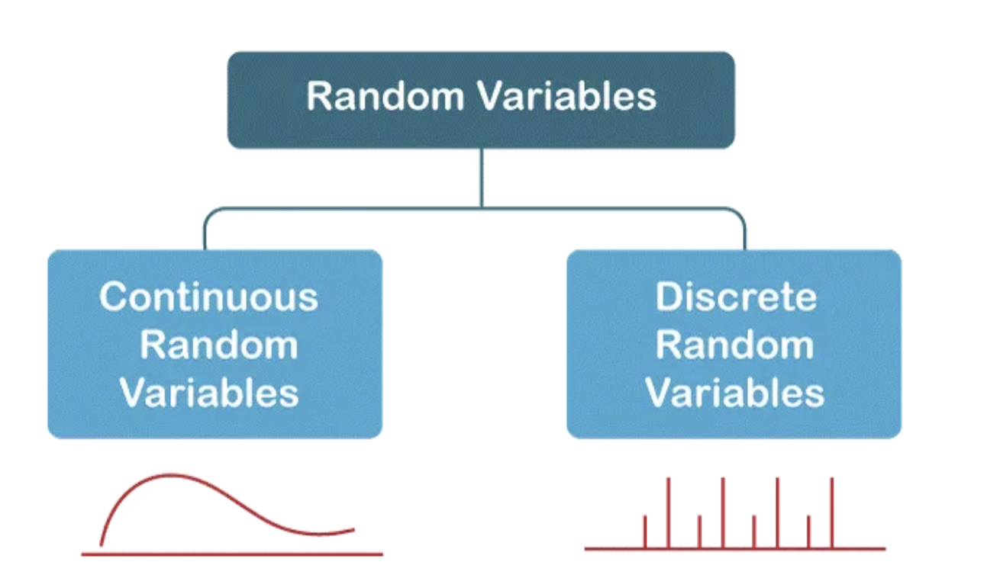

PSTAT 5A: Discrete Random Variables
Lecture 8
2025-07-10
Welcome to Lecture 8
Discrete Random Variables
From outcomes to numbers: quantifying randomness
Today’s Learning Objectives
By the end of this lecture, you will be able to:
- Define random variables and distinguish discrete from continuous
- Work with probability mass functions (PMFs) and cumulative distribution functions (CDFs)
- Calculate expected values and variances for discrete random variables
- Apply properties of expectation and variance
- Work with common discrete distributions (Bernoulli, Binomial, Geometric, Poisson)
- Solve real-world problems using discrete random variables
- Use
pythonto compute probabilities and parameters
What is a Random Variable?
Definition: A random variable is a function that assigns a numerical value to each outcome of a random experiment.
Notation: Usually denoted by capital letters \(X\), \(Y\), \(Z\)
Key insight: Random variables transform outcomes into numbers, making statistical analysis possible
Die Roll Example: Mapping Outcomes to Numbers
| 1 | 2 | 3 | 4 | 5 | 6 |
Random Variable X maps each die face to its numerical value.
Why Use Random Variables?
Random variables allow us to:
- Quantify outcomes numerically
- Calculate means, variances, and other statistics
- Model real-world phenomena
- Make predictions and decisions
- Compare different random processes
Examples: Height, test scores, number of defects, wait times, stock prices
Types of Random Variables
Today we focus on discrete random variables - notice there are gaps between possible values!
Discrete Random Variable
Takes on a countable number of values
Can list all possible values
Examples:
• Dice rolls: {1, 2, 3, 4, 5, 6}
• Number of emails: {0, 1, 2, 3, …}
• Quiz scores: {0, 1, 2, …, 10}
Continuous Random Variable
Takes on uncountably many values
Cannot list all possible values
Examples:
• Height: Any value in \([0, \infty)\)
• Time: Any positive real number
• Temperature: Any real number
:::
Probability Mass Function (PMF)
Definition: The Probability Mass Function (PMF) of a discrete random variable \(X\) is:
\[P(X = x) = \text{probability that } X \text{ takes the value } x\]
Properties of PMF:
- \(P(X = x) \geq 0\) for all \(x\)
- \(\sum_{\text{all } x} P(X = x) = 1\)
Interactive PMF Demo: Fair Die
Theoretical vs Observed Frequencies
Statistics: Click “Roll Die” to see statistics
PMF Example: Two Coin Flips
Two Coin Flips - Number of Heads
Let \(X\) = number of heads in two coin flips
Sample Space: \(\{HH, HT, TH, TT\}\)
H T H T
Click coins to flip them!
| \(x\) (heads) | Outcomes | \(P(X = x)\) | Empirical |
|---|---|---|---|
| 0 | TT | 0.25 | 0 |
| 1 | HT, TH | 0.50 | 0 |
| 2 | HH | 0.25 | 0 |
Cumulative Distribution Function (CDF)
The cumulative distribution function of a random variable \(X\) is:
\[F(x) = P(X \leq x)\]
Properties of CDF: 1. \(F(x)\) is non-decreasing 2. \(\lim_{x \to -\infty} F(x) = 0\) 3. \(\lim_{x \to \infty} F(x) = 1\) 4. \(F(x)\) is right-continuous
Expected Value and Variance
The expected value of a discrete random variable \(X\) is:
\[E[X] = \mu = \sum_{\text{all } x} x \cdot P(X = x)\]
The variance of a random variable \(X\) measures spread around the mean:
\[\text{Var}(X) = \sigma^2 = E[(X - \mu)^2] = E[X^2] - (E[X])^2\]
Expected value represents the long-run average if we repeat the experiment many times.
Law of Large Numbers Demo
Law of Large Numbers Demo
Watch how the sample mean converges to the expected value! {.smaller}
Common Discrete Distributions
Bernoulli
Single trial, two outcomes
Parameters: \(p\) (success probability)
PMF: \(P(X = 1) = p\), \(P(X = 0) = 1-p\)
Mean: \(p\)
Variance: \(p(1-p)\)
Binomial
\(n\) independent Bernoulli trials
Parameters: \(n\) (trials), \(p\) (success prob.)
PMF: \(P(X = k) = \binom{n}{k} p^k (1-p)^{n-k}\)
Mean: \(np\)
Variance: \(np(1-p)\)
Geometric
Trials until first success
Parameters: \(p\) (success probability)
PMF: \(P(X = k) = (1-p)^{k-1} p\)
Mean: \(1/p\)
Variance: \((1-p)/p^2\)
Poisson
Events in fixed interval
Parameters: \(\lambda\) (average rate)
PMF: \(P(X = k) = \frac{\lambda^k e^{-\lambda}}{k!}\)
Mean: \(\lambda\)
Variance: \(\lambda\)
:::
Interactive Distribution Explorer
Distribution Visualizer
Practice Problem 1
A box contains 3 red balls and 2 blue balls. Two balls are drawn without replacement. Let \(X\) = number of red balls drawn. Find the PMF of \(X\).
Solution. \(X\) can take values 0, 1, or 2.
\(P(X = 0) = \frac{\binom{3}{0}\binom{2}{2}}{\binom{5}{2}} = \frac{1 \times 1}{10} = \frac{1}{10}\)
\(P(X = 1) = \frac{\binom{3}{1}\binom{2}{1}}{\binom{5}{2}} = \frac{3 \times 2}{10} = \frac{6}{10}\)
\(P(X = 2) = \frac{\binom{3}{2}\binom{2}{0}}{\binom{5}{2}} = \frac{3 \times 1}{10} = \frac{3}{10}\)
Check: \(\frac{1}{10} + \frac{6}{10} + \frac{3}{10} = 1\) ✓
Practice Problem 2: Expected Value
Using the red balls example from Problem 1, find \(E[X]\) and \(\text{Var}(X)\).
Solution. Expected Value: \[E[X] = 0 \times \frac{1}{10} + 1 \times \frac{6}{10} + 2 \times \frac{3}{10} = 0 + \frac{6}{10} + \frac{6}{10} = 1.2\]
Variance: \[E[X^2] = 0^2 \times \frac{1}{10} + 1^2 \times \frac{6}{10} + 2^2 \times \frac{3}{10} = 0 + \frac{6}{10} + \frac{12}{10} = 1.8\]
\[\text{Var}(X) = E[X^2] - (E[X])^2 = 1.8 - (1.2)^2 = 1.8 - 1.44 = 0.36\]
Standard Deviation: \(\sigma = \sqrt{0.36} = 0.6\)
Practice Problem 3
A student takes a 10-question multiple choice quiz with 4 options per question. If the student guesses randomly, what’s the probability of getting exactly 3 correct?
Solution. This is a binomial distribution with \(n = 10\), \(p = 1/4 = 0.25\)
\[P(X = 3) = \binom{10}{3} \times (0.25)^3 \times (0.75)^7\]
\[P(X = 3) = 120 \times 0.015625 \times 0.1335 \approx 0.2503\]
So there’s about a 25% chance of getting exactly 3 correct by guessing.
Properties of Expected Value
Linearity of Expectation
- \(E[c] = c\) (constant)
- \(E[cX] = c \cdot E[X]\) (scaling)
- \(E[X + Y] = E[X] + E[Y]\) (additivity)
- \(E[aX + bY + c] = aE[X] + bE[Y] + c\)
Variance Properties
- \(\text{Var}(aX + b) = a^2 \text{Var}(X)\)
- \(\text{Var}(X + Y) = \text{Var}(X) + \text{Var}(Y)\) (if \(X\) and \(Y\) are independent)
Important: Property 3 holds even if \(X\) and \(Y\) are dependent!
Key Takeaways
Main Concepts
- Random variables transform outcomes into numbers for mathematical analysis
- PMF gives probabilities for specific values; CDF gives cumulative probabilities
- Expected value is the long-run average; variance measures spread
Distribution Selection
Choose distributions based on the underlying process:
Bernoulli for single trials
Binomial for fixed trials
Geometric for waiting times
Poisson for rates
Key Principle
- Law of Large Numbers connects theoretical expectations with observed averages
Looking Ahead
Next Lecture: Continuous Random Variables
Topics we’ll cover:
Probability density functions (PDFs)
Normal distribution
Exponential distribution
Central Limit Theorem applications
Connection: Discrete distributions often approximate continuous ones, and vice versa
Questions?
Office Hours: 11AM on Thursday (link on Canvas)
Email: nmathlouthi@ucsb.edu
Next Class: Continuous Random Variables
Resources

Understanding Data – Discrete Random Variables © 2025 Narjes Mathlouthi